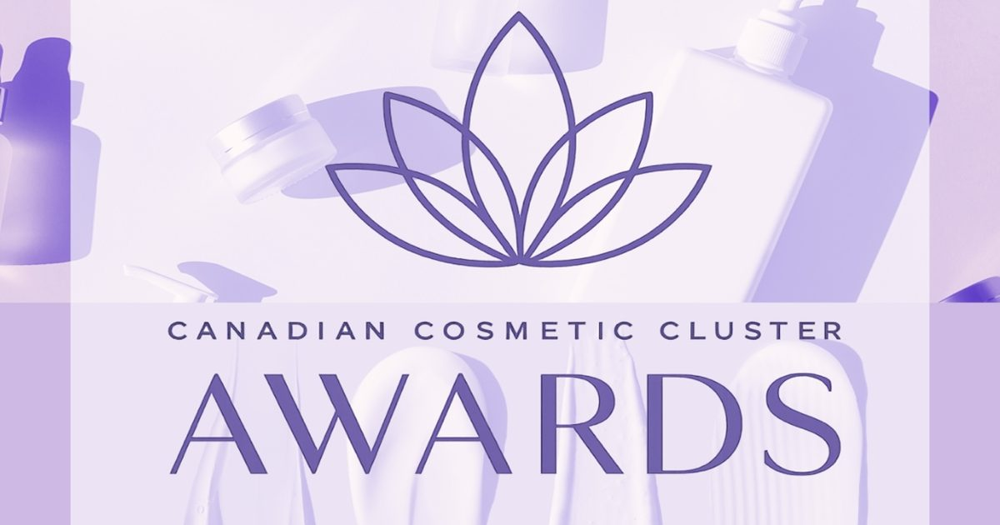

Канадский косметический кластер запускает награды, ориентированные на возможности отрасли
Канадский косметический кластер запустил первую премию Canadian Cosmetic Cluster Awards, международную программу, призванную признать инновации в индустрии красоты, предоставляя победителям практическую поддержку для ускорения их развития.
Задуманные и разработанные Маргаритой Сидоровой, основателем и президентом Канадского косметического кластера, вместе с Мэри Орландо и Фрэнком Турко, награды направлены на то, чтобы выйти за рамки традиционного признания